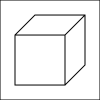

9까지의 수
숫자 읽고, 쓰기
아라비아 숫자를 읽고 쓰는 연습을 합니다.
| 아라비아 | 한자어(식별) | 우리말(갯수) | 서수(순서) | 응용 |
|---|---|---|---|---|
| 1 | 일 | 하나 | 첫째(예외) | 한 개, 한 뼘 |
| 2 | 이 | 둘 | 둘째 | 두 개, 두 뼘 |
| 3 | 삼 | 셋 | 셋째 | 세 개, 세 뼘 |
| 4 | 사 | 넷 | 넷째 | 네 개, 네 뼘 |
| 5 | 오 | 다섯 | 다섯째 | 다섯 개, 다섯 뼘 |
| 6 | 육 | 여섯 | 여섯째 | 여섯 개, 여섯 뼘 |
| 7 | 칠 | 일곱 | 일곱째 | 일곱 개, 일곱 뼘 |
| 8 | 팔 | 여덟 | 여덟째 | 여덟 개, 여덟 뼘 |
| 9 | 구 | 아홉 | 아홉째 | 아홉 개, 아홉 뼘 |
서수(순서를 나타내는 수) vs 기수(수량을 나타내는 수수)
응용해보기
- 이는 일보다 하나 크다.
- 이는 사보다 둘 작다.
여러가지 모양
주위 사물로부터 (모양의 크기나 재질과 상관 없이) 모양의 특징을 파악하여 서로 비교, 분리 훈련
- 상자 모양: 육각형 모양
- 구 모양
- 기둥 모양(원기둥)

덧셈과 뺄셈
합치기/가르기
기호
범위 : 1 ~ 9의 한 자릿수 덧셈(큰 수 - 작은 수)
+(더하기), -(빼기), =(등호) 기호를 배웁니다.
비교하기
- 길이가: 길다 vs 짧다
- 무게가: 가볍다 vs 무겁다
- 면적이: 넓다 vs 좁다
- 양이: 많다 vs 적다
- 나무가 연필보다 (길다, 무겁다, 넓다, 많다.)
- 수치로 비교할 필요 없다.
50까지 수
우리말 표현과 한자어 표현을 익힙니다.
- 십, 이십, 삼십, 사십, 오십
- 열, 스물, 서른, 마흔, 쉰